Outputs
The files listed below will be created in the selected results directory (output_location parameter). All paths are relative to the top-level results directory.
Plots folder
Mosaic count - reads density across bins
File path: <OUTPUT_FOLDER>/<SAMPLE>/plots/counts/CountComplete.pdf
Report category: Mosaic counts
The plots present in this file will allow you to visualize both global statistics at the sample level but also individual Strand-Seq karyotypes at the cell level.
The first page of the pdf file shows the statistics of the analysis result, such as the distribution of total number of reads per cell, duplication rate, or excluded bins per chromosomes.
| 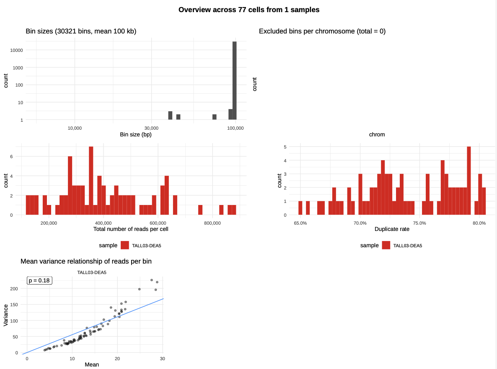 |
|---|
| Global statistics - Sample level |
Afterwards, every pages show the overview of binning count result of each of the single-cells as presented below. The depth of Crick reads are depicted in the green color in the right side, and the depth of Watson reads are depicted in the orange color in the left side of each chromosome lines. HMM automatically defines the WW/WC/CC status according the reads distribution (yellow background: WC, green background: CC, orange background: WW).
| 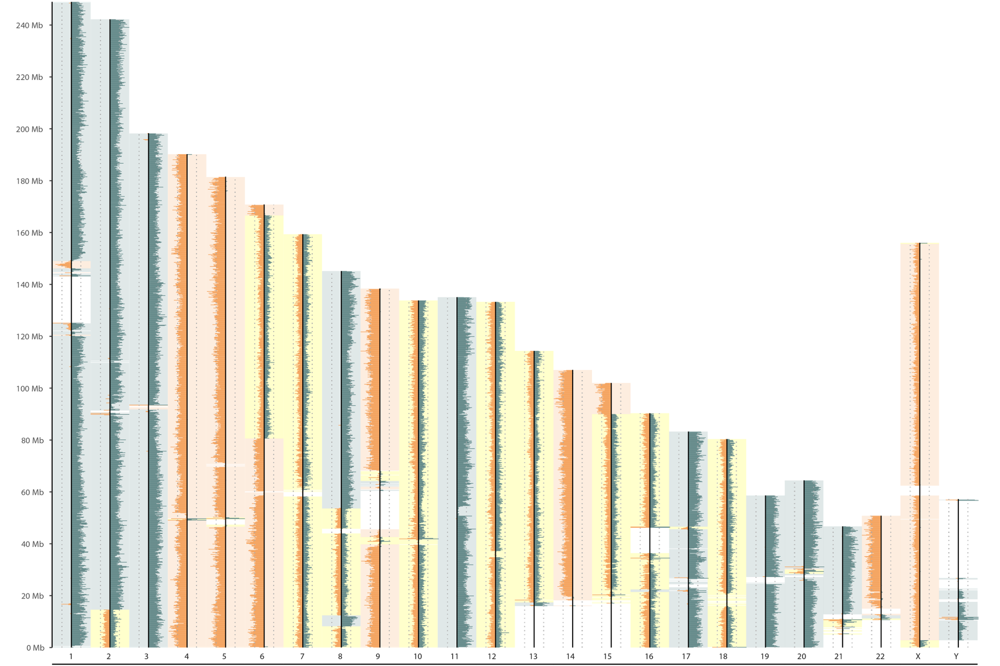 |
|---|
| Strand-seq karyotype visualisation |
Strand-seq karyotype visualisation based on reads counting according defined window (here 100kb). Additionnal statistics are also presented in the upper part of the figure.
Examples of good-quality and low-quality cells are presented here.
SV calls
File path: <OUTPUT_FOLDER>/plots/<SAMPLE>/sv_calls/<METHOD>/<CHR>.pdf
Report category: SV Calls
The SV calls plots allow to identify and analyse at the single-cell level, the SV detected in the pipeline.
SV calls plot correspond to chromosome-wise plots summarizing all informations computed during the pipeline (count binning = orange/green core signal, grey/white background: mosaic segments, bottom green/yellow/orange line: W/C state, additional colors: SV groups).
Each different file corresponds to a different chromosome and each file presents a different track for each library processed successfully during the pipeline.
As two different filtering methods are currently set (stringent/lenient filtering, stringent: a SV must be present in more than 5% of the cells), two groups of files can be found:
- stringent_filterTRUE/chr
.pdf - lenient_filterFALSE/chr
.pdf
Description of the parameters used can be found in the parameters section here.
| 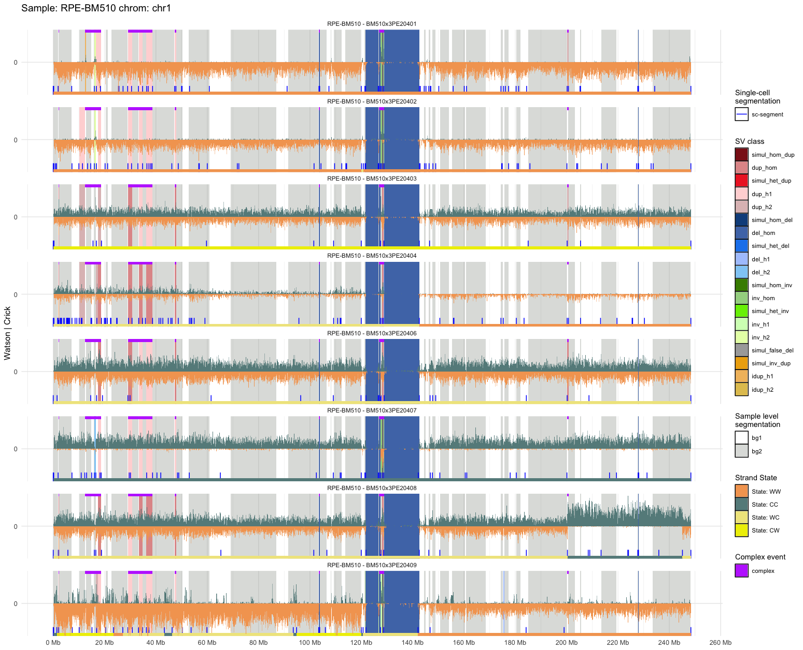 |
|---|
| SV calls |
| Here we can identify heterozygous deletions (blue) as well as heterozygous duplication (pink) on cells PE20453 and PE20458. |
SV consistency
File path: <OUTPUT_FOLDER>/<SAMPLE>/plots/sv_consistency/<METHOD>.consistency-barplot-<byaf|bypos>.pdf
Report category: SV Consistency
SV consistency plots correspond to barplots representing SV events (rows) according their frequency across cells and their class (del, dup, inv, ...).
These plots are complentary to the other outputs available and are presented either sorted by Variant Allele Fraction (VAF) or by position.
Like SV calls and SV clustering plots, SV consistency are also presented regarding the two filtering methods (stringent/lenient filtering), two groups of files can be found:
- stringent_filterTRUE.
- lenient_filterFALSE.
Here are some important points to better analyse these plots:
- If the VAF is close to 1, the SVs are expected to be germline variant
- If the VAF is below 1, the SVs are expected to be somatic variant
- If the SVs only detected by one cell, it can be rare SV event, or an SCE (sister chromatid exchange) event
- SCEs happen independently in each single cell, and unlike SVs, SCEs are not transmitted clonally to daughter cells. Hence, changepoints resulting from SCEs are very unlikely to recur at the same position in >1 cell of a sample
| 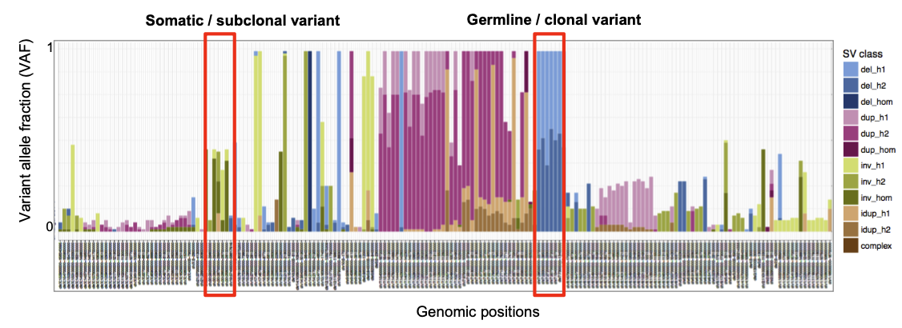 |
|---|
| SV consistency (position sorted) |
SV clustering
File path: <OUTPUT_FOLDER>/<SAMPLE>/plots/sv_clustering/<CELL>.pdf
Report category: SV Clustering
SV clustering are complementary to previously presented plots, as the heatmap representation allow user to have a complete and global representation of the SVs at the sample level.
Each file is composed of two plots:
- a clustering heatmap where cells (rows) were ordered automatically using Ward Hierarchical Agglomerative clustering based on the number of cells presenting each SV (columns). SV are horizontally sorted by genomic position (chr1..22, X, Y)
- a similar heatmap (same horizontal and vertical sorting) but highlighting both SV type (dup, del, inv, ...) and SV haplotype phasing (H1/H2/Hom)
Two types of files are accesible from the user:
- simpleCalls_llr4_poppriorsTRUE_haplotagsFALSE_gtcutoff0.05_regfactor6_filterTRUE-
- position: no scaling
- chromosome: chromosome-size scaled
By using these heatmaps, the user can easily identify subclones based on the SV position and enrichment across cells, as presented below.
| 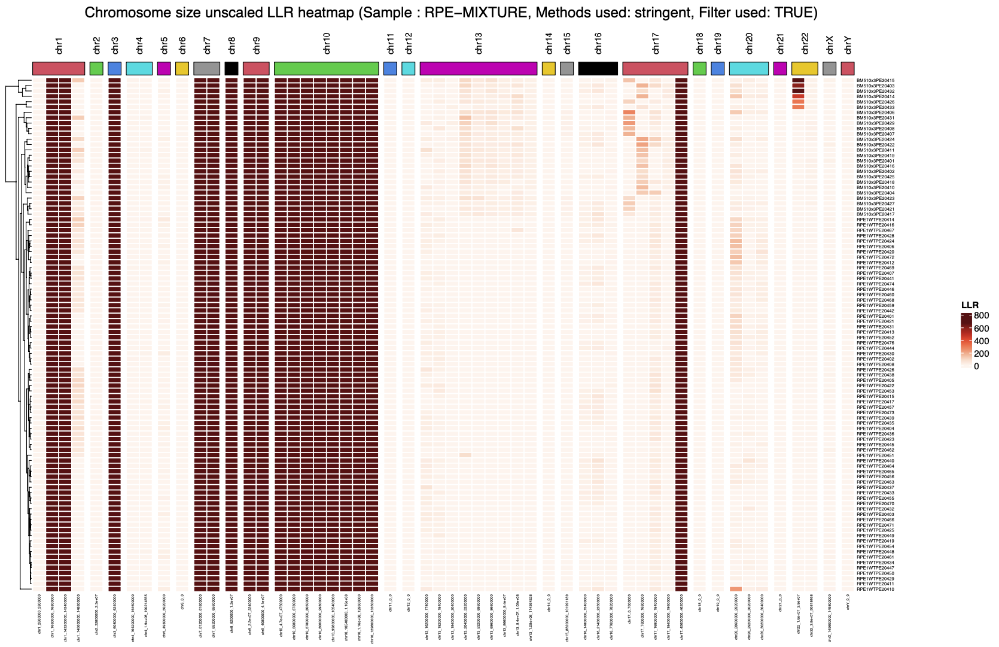 |
|---|
| 1. SV clustering (SV density) |
| 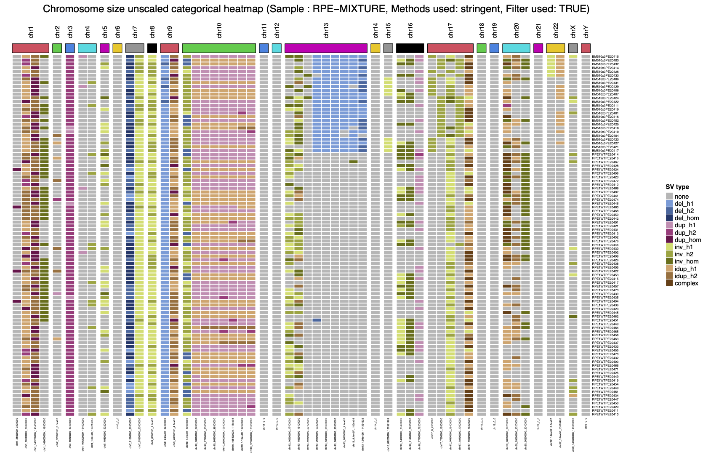 |
|---|
| 2. SV clustering (SV type) |
Genome browsing
File path: <OUTPUT_FOLDER>/<SAMPLE>/plots/UCSC|IGV
You can now also generates UCSC and IGV genome-browsing ready-to-be-used files when genome_browsing_files_generation=True. Here is an example below:
| 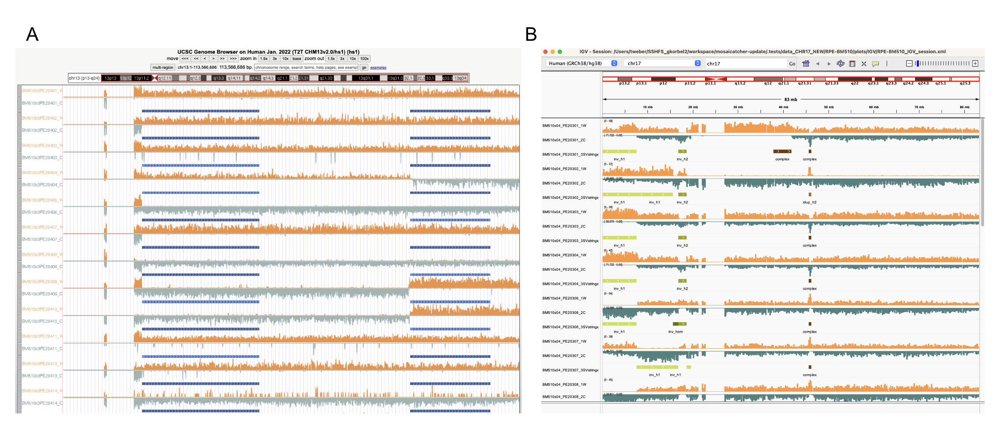 |
|---|
| (A) UCSC and (B) IGV Genome browsing using files generated by MosaiCatcher |
UCSC genome browser
To visualise your data on the UCSC genome browser, go to the website, section My Data/Custom Tracks, and upload the .gz file generated by MosaiCatcher located in <OUTPUT_FOLDER>/<SAMPLE>/plots/UCSC/<SAMPLE>.bedUCSC.gz. Then click on the submit button, wait until the loading complete. You should see the list of tracks loaded.
IGV
MosaiCatcher generates an XML session ready to use by IGV. Thus, files in this XML session are referenced using relative path. It's thus important to either mount the disk where is present the data on your computer, or to copy the complete <OUTPUT_FOLDER>/<SAMPLE>/plots/IGV/ on your computer. Once this is done, open the software, click on File/Open Session and load the XML file present in the IGV folder. Please note that the SV calls coloring appears only once you are displaying the data at the chromosome level, not at the genome level.
scTRIP multiplot (Marco Cosenza)
From 2.2.2, it's now possible to use scTRIP multiplot inside MosaiCatcher. By enabling the option available in the configuration (scTRIP_multiplot=True), you will obtain for each chromosome of each cell able to be processed, a plot similar to below:
| 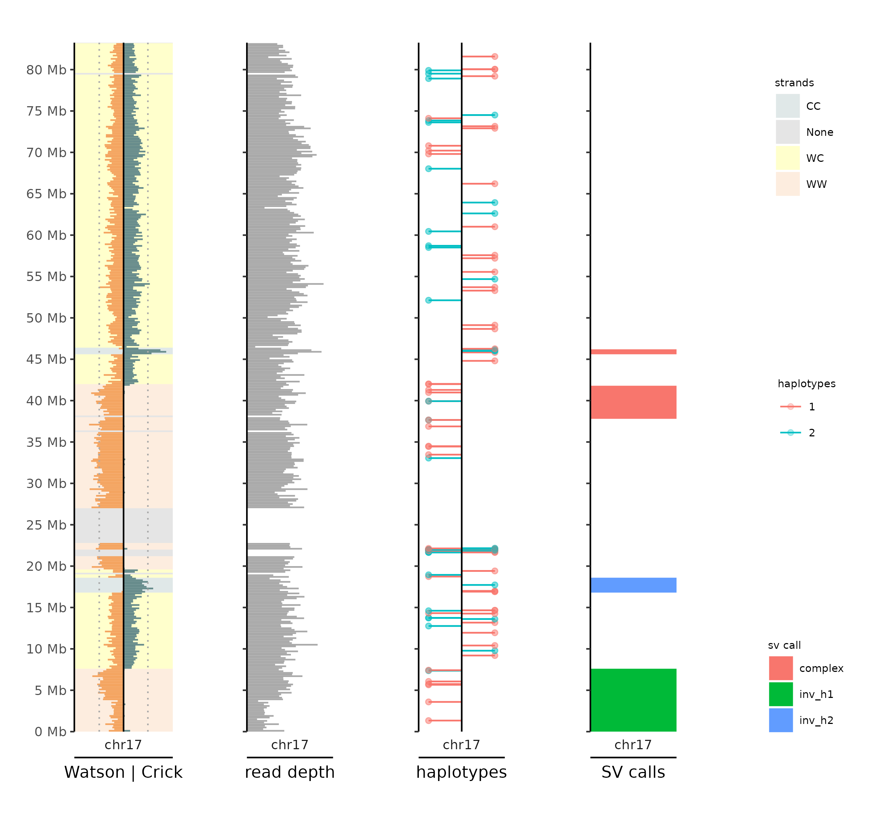 |
|---|
| scTRIP multiplot (Watson/Crick, depth, haplotype phased and SV calls) |
Statistics
File path: <OUTPUT_FOLDER>/<SAMPLE>/stats/stats-merged.tsv
Report category: Stats
| Col nb | Col title | Comment |
|---|---|---|
| 1 | callset | mosaiclassifier SV callset filename |
| 2 | cell_count | number of librairies processed |
| 3 | segments | number of segments identified |
| 4 | total_sce | total nb of sister-chromatid-exchange identified |
| 5 | avg_sce_per_cell | average nb of sister-chromatid-exchange per cell identified |
| 6 | total_calls | total nb of SV detected |
| 7 | unique_calls | nb of unique SV detected |
| 8 | unique_calls_merged | |
| 9 | complex_lengths_mb | cumulative size of complex SV (Mb) detected |
| 10 | total_calls_complex | total nb of complex SV detected |
| 11 | unique_calls_complex | nb of unique complex SV detected |
| 12 | avg_sv_load_per_cell_mb | average size of SV (Mb) detected per cell |
| 13 | avg_sv_load_per_cell_complex_mb | average size of complex SV (Mb) detected per cell |
| 14 | calls_af0to10 | nb of SV calls where SV sample allelic frequency is 0 < x < 10% |
| 15 | calls_af10to80 | nb of SV calls where SV sample allelic frequency is 10 < x < 80% |
| 16 | calls_af80to100 | nb of SV calls where SV sample allelic frequency is 80 < x < 100% |
| 17 | length_sum_af0to10_mb | cumulative length of SV calls where SV sample allelic frequency is 0 < x < 10% |
| 18 | length_sum_af10to80_mb | cumulative length of SV calls where SV sample allelic frequency is 10 < x < 80% |
| 19 | length_sum_af80to100_mb | cumulative length of SV calls where SV sample allelic frequency is 80 < x < 100% |
| 20 | calls_af0to10_complex | nb of complex SV calls where SV sample allelic frequency is 0 < x < 10% |
| 21 | calls_af10to80_complex | nb of complex SV calls where SV sample allelic frequency is 10 < x < 80% |
| 22 | calls_af80to100_complex | nb of complex SV calls where SV sample allelic frequency is 80 < x < 100% |
| 23 | length_sum_af0to10_complex_mb | cumulative length of complex SV calls where SV sample allelic frequency is 0 < x < 10% |
| 24 | length_sum_af10to80_complex_mb | cumulative length of complex SV calls where SV sample allelic frequency is 10 < x < 80% |
| 25 | length_sum_af80to100_complex_mb | cumulative length of complex SV calls where SV sample allelic frequency is 80 < x < 100% |
Raw SV calls (tab-seperated file)
File path: <OUTPUT_FOLDER>/<SAMPLE>/mosaiclassifier/sv_calls/<method>.pdf
Columns:
| Col nb | Col title | Comment |
|---|---|---|
| 1 | chrom | chromosome |
| 2 | start | chromosome start |
| 3 | end | chromosome end |
| 4 | sample | sample name |
| 5 | cell | cell name |
| 6 | class | WC/WW/CC/CW |
| 7 | scalar | Corresponding scalar to haplotype class |
| 8 | num_bins | number of bins overlapping SV |
| 9 | sv_call_name | SV type corresponding to the highest likelihood ratio |
| 10 | sv_call_haplotype | Scalar corresponding to haplotype class |
| 11 | sv_call_name_2nd | SV type corresponding to the 2nd highest likelihood ratio |
| 12 | sv_call_haplotype_2nd | Scalar corresponding to the haplotype class of the 2nd highest likelihood ratio |
| 13 | llr_to_ref | Highest Likelihood ratio value |
| 14 | llr_to_2nd | 2nd Highest Likelihood ratio value |
| 15 | af | SV allelic frequency |
Mosaic count plots examples
High-quality example
| High-quality example |
| High-quality example |
Low-quality examples
Under-BrdU incorporation
| 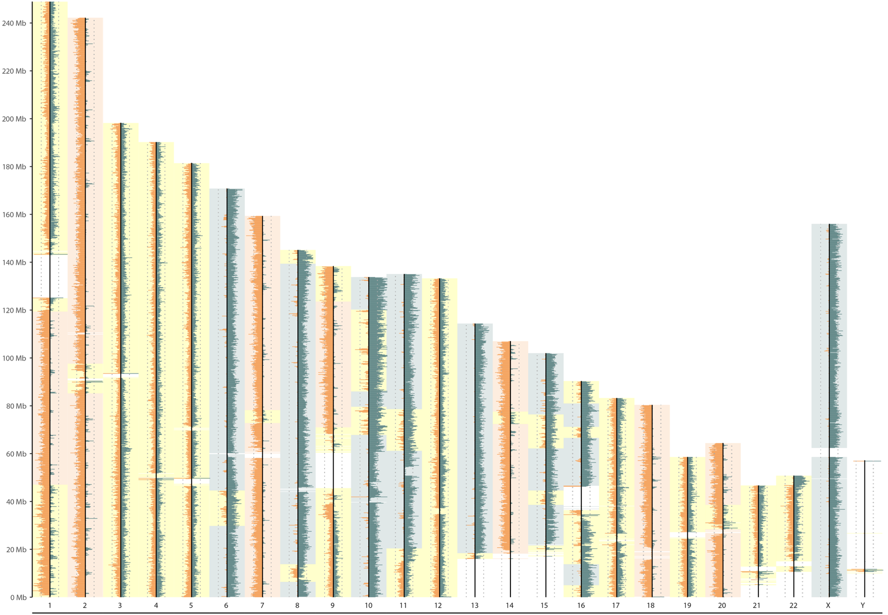 |
|---|
| Under-BrdU incorporation |
| little spikes = nascent DNA strand that were not degrade properly |
Over-BrdU incorporation
| 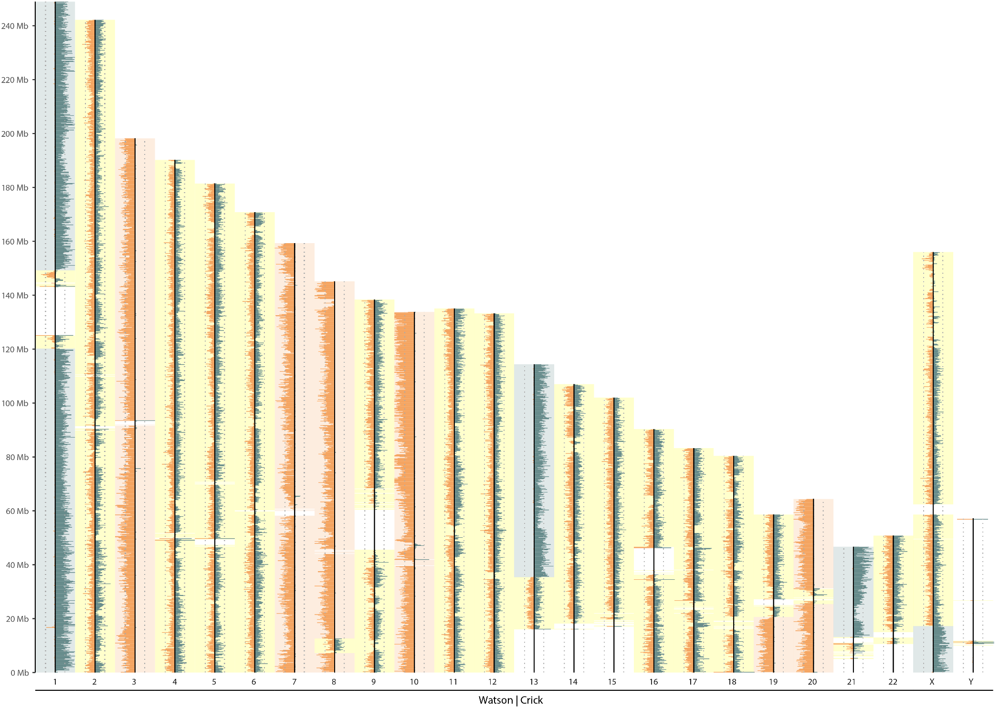 |
|---|
| Over-BrdU incorporation |
| BrdU degraded both nascent and template strands |
Background contamination
| 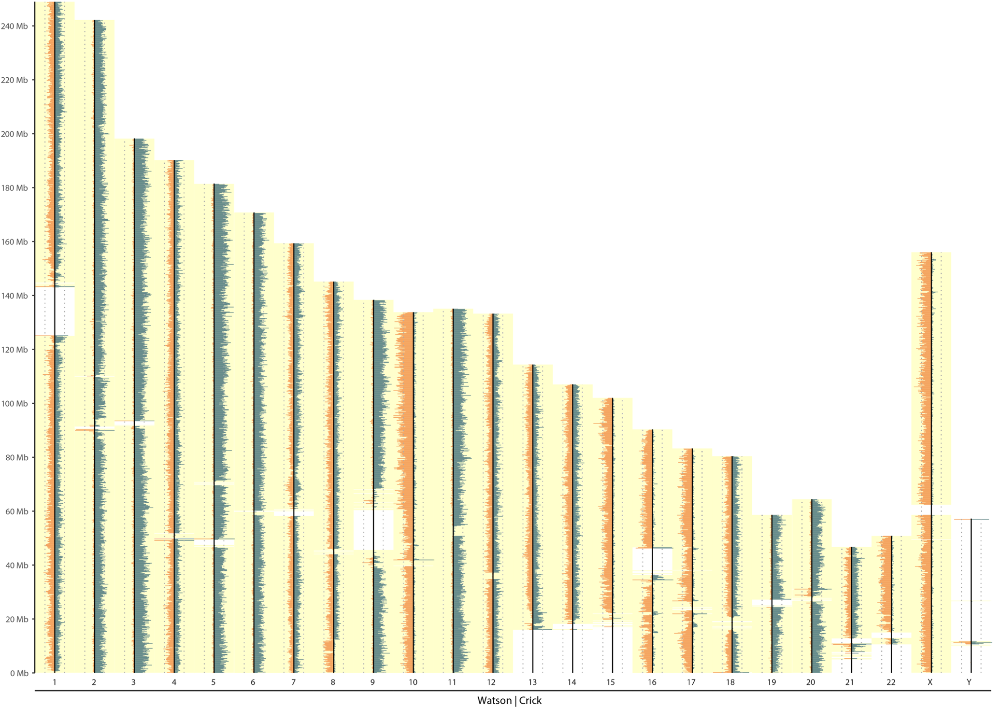 |
|---|
| Background contamination |
| Noisy background reads make all chromosomes look WC |
Multiple cell sequenced instead of single
| 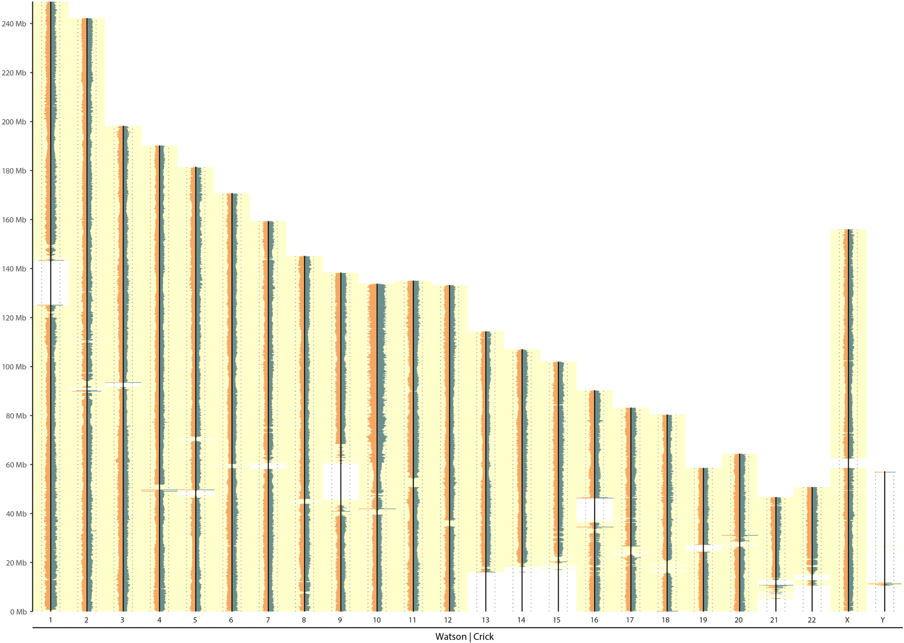 |
|---|
| Multi cell (Positive control) |
No cell sequenced
| 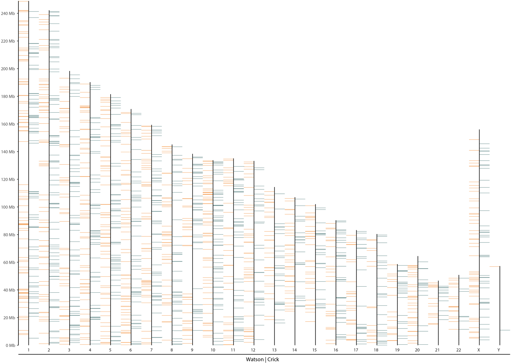 |
|---|
| Zero cell (Negative control) |
| Under-BrdU incorporation |
| little spikes = nascent DNA strand that were not degrade properly |
Over-BrdU incorporation
| Over-BrdU incorporation |
| BrdU degraded both nascent and template strands |
Background contamination
| Background contamination |
| Noisy background reads make all chromosomes look WC |
Multiple cell sequenced instead of single
| Multi cell (Positive control) |
No cell sequenced
| Zero cell (Negative control) |